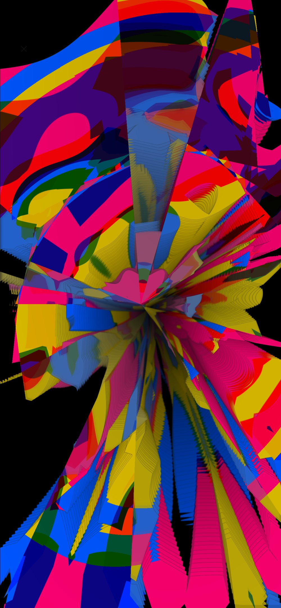
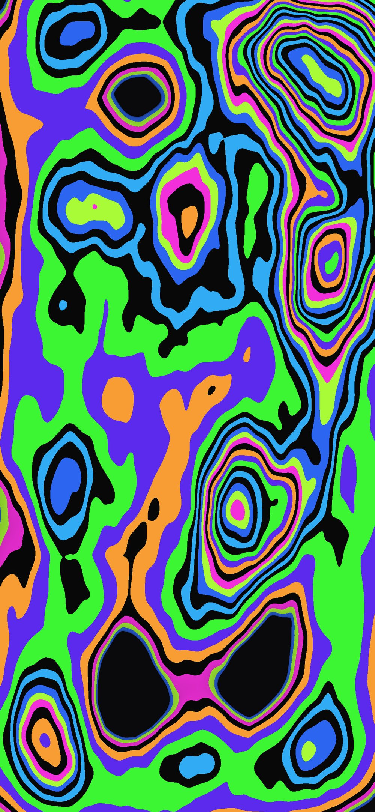
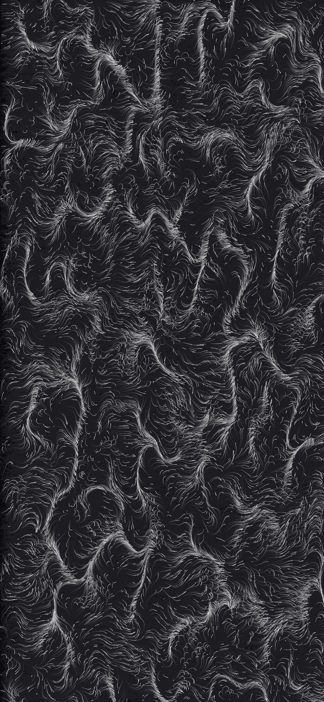

2026 · iPhone & iPad
Aumara Realms
Live · in your browser · with sound Enter Reflecting- Medium
- Real-time generative graphics and sound, EEG biofeedback
- Year
- 2026
- Format
- App for iPhone and iPad
Nine living worlds of light and sound that answer the mind and breath.
Each realm is drawn and sounded live on the device. Played by touch, or worn: with an EEG headband, focus, calm, breath and heartbeat shape what unfolds. (Placeholder: expand in your own words.)


